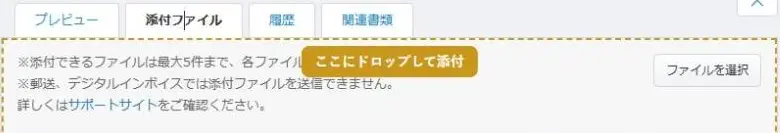
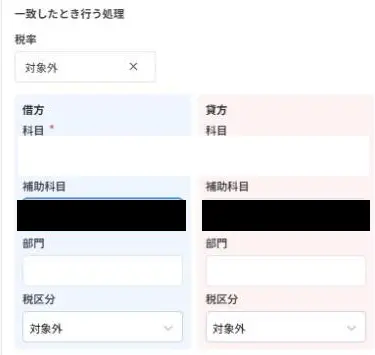
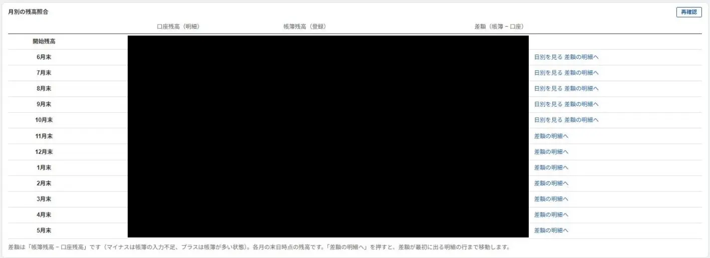
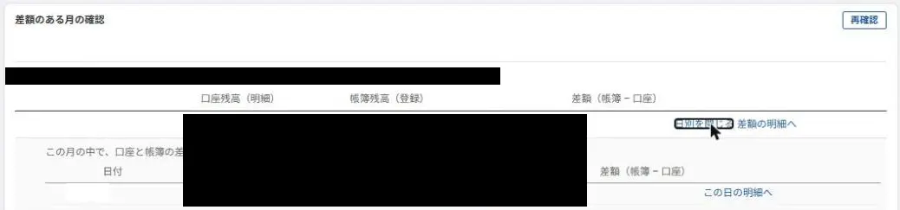
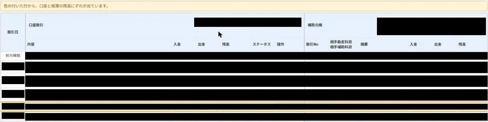
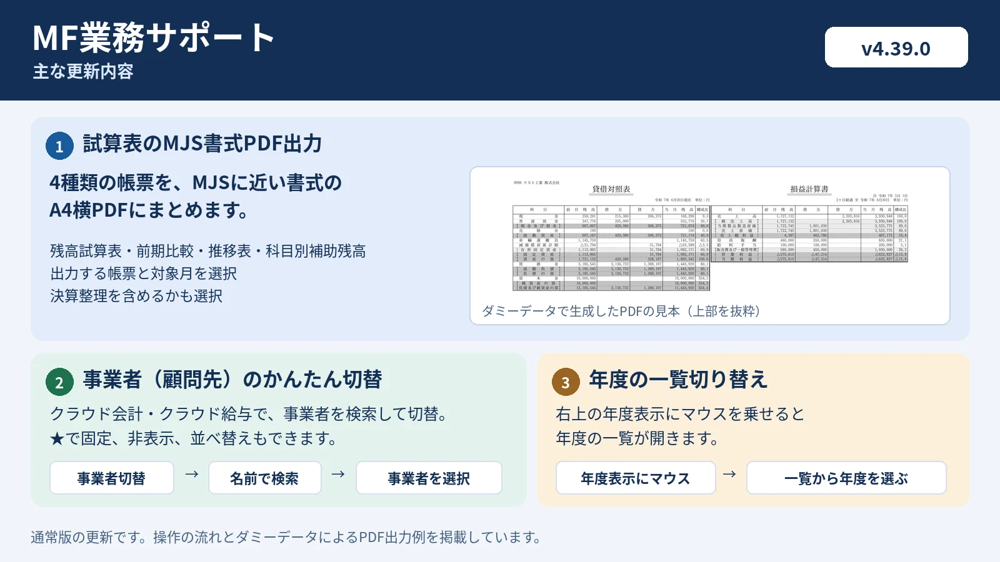
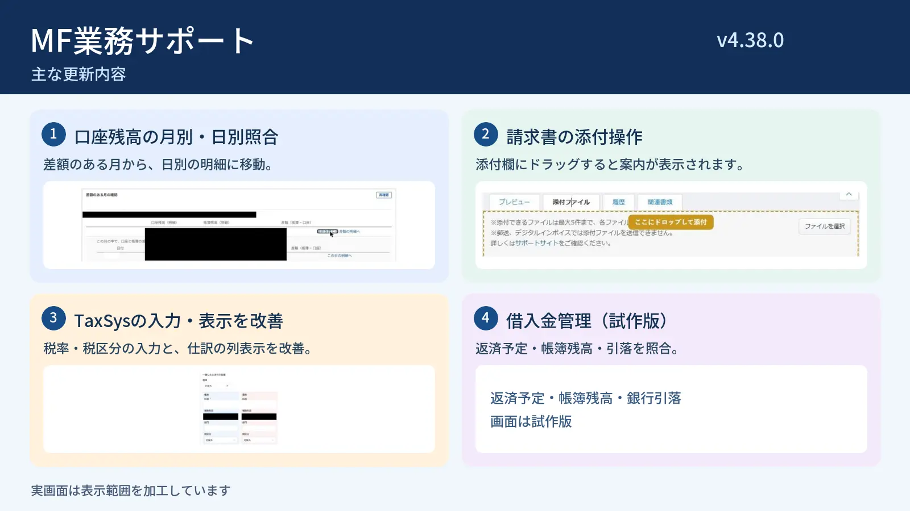
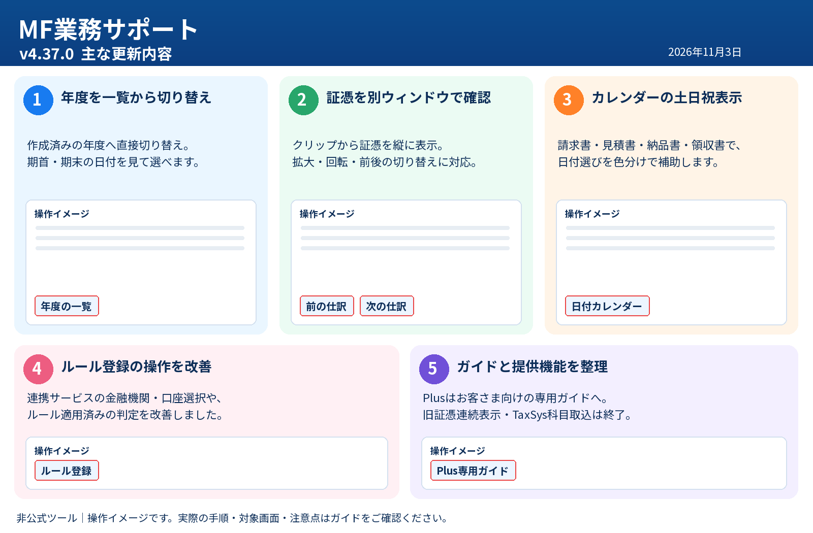

今回のアップデート紹介画像（通常版 v4.42.0／Plus版 v1.3.0）
追加機能・修正内容をまとめた紹介画像です。実際の操作方法は下の機能別ガイドをご確認ください。
できること
仕訳帳 明細の一括修正
選んだ明細行だけ、科目・部門・税区分・摘要をまとめて修正します。
➕補助科目クイック追加
画面を離れずに、補助科目をすばやく追加します。
📖摘要辞書
短縮語から、登録済みの摘要を入力します。
⚙️自動仕訳ルールの登録補助 修正
連携サービスの明細から、ルール新規作成画面を開きます。
🛡️ルール更新なしで明細を登録 NEW
ルール適用済みの明細で、更新を伴わない詳細登録へ進めます。
🗑️勘定科目の一括削除 NEW
MFが削除可能とする科目を選んで削除します。初期オフ。
✅消込チェック・消込照合 修正
計上と支払を照合し、未消込金額を強調。「一覧・検索」から確認できます。
🔍いつもと違う仕訳
取引先ごとの、普段と違う勘定科目・金額・税区分を知らせます。
🤖AI監査プロンプト
仕訳帳・総勘定元帳の内容を、AIに確認させる文章に整えて書き出します。
📝決算チェックリスト
勘定科目ごとに決算前の確認項目をチェックします。
🧾証憑を別ウィンドウで確認
仕訳帳の証憑を別ウィンドウに並べ、前後の仕訳へ切り替えます。
🏷️突合タグ付け
照合済みの仕訳行にタグを付けます。
📈月次分析
推移表と前期比較から、変動の大きい科目を抽出します。 操作動画あり。
📊経営状況レポート 修正
主要指標・グラフとAI回答をまとめ、説明文の編集・追加、要確認事項の掲載設定や業種別の見方に対応します。
📉決算予測
推移表から、予測方法や調整事項を設定してA4横・2枚の決算予測資料を作ります。 操作動画あり。
📄試算表の一括PDF出力 修正
画面ごとに出力する表を選び、まとめてA4横のPDFにします。旧版の操作動画あり。
📄試算表のMJS書式PDF出力 NEW
残高試算表など4種類の帳票をMJSに近い書式で、A4横のPDFにします。
📊前期比較の単月・累計表示 修正
前期比較の単月と累計を左右に並べ、A4横で印刷できます。
📂ストレージの一括保存
チェックしたファイルを、選んだフォルダの中へまとめて保存します。
↔️元帳の横開き表示 修正
推移表・残高試算表・消費税集計から、元帳を右側に開きます。
🧮消費税集計の補助科目別集計 NEW
補助科目×税区分ごとの税抜金額を照合し、元帳を開けます。
🔎元帳の諸口の中身表示
総勘定元帳・補助元帳で、諸口の内訳を行ごと・まとめて開閉します。
％対売上高比率の表示
損益計算書・製造原価報告書を、売上高に対する比率で表示します。
↔️月次推移表の全体表示切り替え NEW
12か月分の横長の表を画面幅に収め、通常の表示へ戻せます。
🗂️部門別Excel／PDF一括出力
全部門分の推移表を、まとめて出力します。
🏢事業者（顧問先）のかんたん切替 NEW
クラウド会計・クラウド給与で、右上から事業者を検索して切り替えます。
📅年度の一覧切り替え 修正
年度表示にマウスを乗せると、作成済み年度の一覧が開きます。
🏠ホームの連携サービス表示
連携サービスの一覧を、画面の幅に合わせて広げます。
📁クラウドBox 取引日の一括編集
複数ファイルの取引日を、まとめて変更します。
📆日付カレンダーの土日祝表示
請求書・見積書・納品書・領収書の日付選択を補助します。
📨クラウド請求書の操作補助
請求書の切り替え、保存、メール除外、消費税欄の一括設定、添付を補助します。
🔧機能の設定
使う機能だけを選べます。
📂TaxSys 仕訳の自動展開と横幅調整
仕訳をまとめて開き、表を画面幅に調整します。初期設定はオフです。
🧩TaxSys 過去仕訳からルール入力 修正
CSVから過去の仕訳を選び、ルールの入力を補助します。初期設定はオフです。
⚖️口座残高の月別照合
差額のある月と日別の明細を確認できます。
📋借入金管理（試作版）
返済予定と帳簿残高・銀行引落を照合します。
導入・更新方法
最新版（v4.42.0）：通常版の初回導入・更新共通ZIPをダウンロード（Drive）
配布ZIPは初回導入・2回目以降の更新で共通です。初めて使う方は「① 初めて導入する」、すでに使っている方は「② 2回目以降の更新」へ進んでください。
Chatworkの配布案内のリンク、またはGoogleドライブの配布フォルダから最新版ZIPをダウンロードします。Googleドライブ上で「コピーを作成」する必要はありません。
① 初めて導入する
初回導入の操作動画（約2分7秒）
再生・一時停止・早送りができます。ボタンで実際の操作場面へ移動できます。動画はv4.32.0での操作例です。実際の導入・更新には、その時点の最新版を使用してください。個人名・社内の一覧などが映る部分は隠しています。
動画の操作手順
- 配布案内から最新版ZIPをダウンロードする。Chatworkの配布案内にあるダウンロードリンク、またはGoogleドライブの配布フォルダを開き、最新版の
MF業務サポート_v○.○.○_初回導入・更新共通.zipをPCに保存します。 - ZIPを開いて「すべて展開」を押す。ダウンロードしたZIPを開き、エクスプローラー上部の「すべて展開」を押します。ZIPのままではChromeに読み込めません。
- デスクトップなどへ展開する。展開先の「参照」から保存場所を選び、「フォルダーの選択」→「展開」を押します。中に
manifest.jsonがある「MF業務サポート」フォルダが読み込み対象です。導入後は、このフォルダを削除・移動・名前変更しないでください。 - Chromeの拡張機能管理画面を開く。Chrome右上の拡張機能アイコン（パズルの形）から「拡張機能を管理」を押します。アドレスバーに
chrome://extensions/と入力しても開けます。右上の「デベロッパー モード」をオンにします（動画では、すでにオンになっています）。 - 「MF業務サポート」フォルダを読み込む。「パッケージ化されていない拡張機能を読み込む」を押し、展開した「MF業務サポート」フォルダを選んで「フォルダーの選択」を押します。
manifest.jsonが直接入っているフォルダを選び、ZIPやその外側のフォルダは選びません。 - 登録とバージョンを確認する。一覧に「MF業務サポート」が表示されたら、「詳細」でバージョンと「ソース」の「ロード元」を確認します。MoneyForwardを開いている場合は、その画面も再読み込みしてください。
② 2回目以降の更新
拡張機能を登録し直す必要はありません。現在使っているフォルダの中身を最新版に差し替え、Chromeで再読み込みします。
2回目以降の更新の操作動画（約2分18秒）
再生・一時停止・早送りができます。ボタンで実際の操作場面へ移動できます。動画はv4.32.0での操作例です。実際の導入・更新には、その時点の最新版を使用してください。個人名・社内の一覧などが映る部分は隠しています。
動画の操作手順
- 最新版ZIPをダウンロードして展開する。Chatworkの配布案内、またはGoogleドライブの配布フォルダから最新版の共通ZIPをダウンロードします。ZIPを開いて「すべて展開」を押し、展開したフォルダを開きます。
- 現在使用中のフォルダを確認する。Chrome右上の拡張機能アイコンから「拡張機能を管理」を開き、「MF業務サポート」の「詳細」を押します。下へスクロールして「ソース」の「ロード元」を押すと、使用中のフォルダを開けます。上書き前に、そのフォルダ全体を別の場所へコピーしてバックアップしてください（バックアップ操作は動画には含まれていません）。
- 最新版の「中身」をすべてコピーする。今回展開した「MF業務サポート」を開き、
manifest.jsonや各ファイル・サブフォルダをすべて選んでコピーします。外側の「MF業務サポート」フォルダごと入れる操作ではありません。 - 使用中のフォルダへ貼り付けて置き換える。手順2で確認した使用中のフォルダへ貼り付けます。「同じ名前のファイルがあります」と表示されたら「ファイルを置き換える」を選びます。使用中のフォルダ自体は削除・移動・名前変更しないでください。
- Chromeで拡張機能を再読み込みする。拡張機能の管理画面へ戻り、更新した「MF業務サポート」の再読み込みボタン（丸い矢印）を押します。「詳細」を開いている場合は、左上の戻る矢印で一覧へ戻れます。
- バージョンを確認し、MoneyForwardも再読み込みする。「MF業務サポート」の表示バージョンを配布ZIPと照合します。開いているMoneyForwardの画面も再読み込みして完了です（MoneyForward画面の再読み込みは動画には含まれていません）。
ファイルを置き換えただけでは反映されません。必ずChromeで拡張機能を再読み込みし、開いているMoneyForwardの画面も再読み込みしてください。
導入・更新できたかの確認
拡張機能の管理画面で「MF業務サポート」のバージョンが、配布ZIPの最新版と一致していることを確認します。同じ名前の拡張機能が複数ある場合は「詳細」の「ロード元」で対象を確認してください。
うまく導入・更新できない場合
- ZIPを「すべて展開」しているか確認します。
- 初回導入では、
manifest.jsonが直接入っているフォルダを選んでいるか確認します。 - 更新では、「ロード元」で確認した使用中のフォルダへ、最新版の中身を上書きしているか確認します。
- Chromeで拡張機能を再読み込みし、MoneyForwardの画面も再読み込みしているか確認します。
それでも反映されない場合は、開発担当者へ連絡してください。
一緒に使ってほしい拡張機能
MFCA Labs（別のChrome拡張機能）
「MFCA Labs」は、マネーフォワード クラウド会計の仕訳入力などを便利にする、別の開発者が提供するChrome拡張機能です。MF業務サポートとあわせて、日々の経理処理・月次監査の効率化にご活用ください。
- 対象画面
- マネーフォワード クラウド会計（機能によって異なります）
- 主な機能
- 日付選択のショートカット、受取利息と源泉所得税の計算、摘要の検索補助、金額セルの合計・差分表示、仕訳内容の整形コピー、科目リンクの一括オープン
便利な使い方
- 日付ショートカット：カレンダー付近の「期首」「先月初」「先月末」などを押して対象日を入力します。
- 受取利息の自動計算：仕訳登録画面で貸方に「受取利息」を選び、「利息計算」で金額入力を補助します。
- 摘要・金額の確認：摘要検索、金額の合計・差分表示、整形コピーを使って仕訳確認や転記作業を補助します。
- 元帳の確認：試算表で Ctrl（MacはCmd）を押しながら左ドラッグし、選択範囲の科目リンクをまとめて開きます。
導入先：MFCA Labs をChromeウェブストアで見る ／ 機能紹介・使い方を見る
MFCA LabsはMF業務サポートとは別の拡張機能であり、本ガイドの開発・配布元が提供するものではありません。両方を同時に利用した場合の動作はです。導入時にはChromeウェブストアに表示される提供元・権限・最新情報を確認してください。
機能の詳細
ルール更新なしで明細を登録 NEW
通常版の「自動で仕訳 ＞ 連携サービスから入力」で、ルールが適用されている明細に「ルール更新なし」ボタンを表示します。
- ルール適用済みの明細で「ルール更新なし」を押します。
- 開いた「詳細」画面で科目・金額・税区分・摘要等を確認します。
- 詳細画面内の「登録」を押して登録します。
勘定科目の一括削除 NEW
他社会計ソフトから移行した際などに誤って作成した不要な勘定科目・補助科目を、MF側で削除可能なものに限り選んで削除します。通常版専用・初期設定オフです。
- 拡張機能の設定で本機能をオンにし、勘定科目設定を開きます。
- 「科目を一括削除」で候補を開き、残す科目のチェックを外します。
- 表示された候補を再確認し、「削除」と入力して実行します。
- 完了後に削除件数と失敗した科目を確認して再読み込みします。
仕訳帳 明細の一括修正
- 対象画面
- 会計帳簿 ＞ 仕訳帳
- 操作方法
- 「明細を一括修正」→ 絞り込み → 行にチェック → 変更内容を指定 → 確認して保存
借方・貸方の明細行ごとに選べます。勘定科目・補助科目・部門・税区分・摘要を変更でき、結果画面や履歴（最大10回分・30日間）から元に戻せます。保存前後にMF上の仕訳を再取得して確認します。
実際の操作動画
再生・一時停止・早送り・巻き戻しができます。場面移動は動画を4分割した暫定位置です。
動画の操作手順
- 仕訳帳で対象の明細行を選ぶ
- 「明細を一括修正」を開く
- 変更する項目を指定する
- 変更を保存し結果を確認する
補助科目クイック追加
- 対象画面
- 振替伝票入力など
- 操作方法
- 補助科目の追加ボタンから操作
入力の途中でも、補助科目をその場で追加できます。
実際の操作動画
再生・一時停止・早送り・巻き戻しができます。場面移動は動画を4分割した暫定位置です。
動画の操作手順
- 振替伝票入力を開く
- 補助科目の欄にマウスを乗せる
- 表示された「＋」を押す
- 新しいタブで補助科目追加欄を開く
摘要辞書
- 対象画面
- 振替伝票入力・総勘定元帳の編集
- 操作方法
- 拡張機能アイコンから短縮語と摘要を登録 → 摘要欄に短縮語を入力 → 候補を選んでEnter
毎月入力する摘要の手間を省け、担当者ごとの表記ゆれも減らせます。
実際の操作動画
再生・一時停止・早送り・巻き戻しができます。場面移動は動画を4分割した暫定位置です。
動画の操作手順
- 仕訳入力画面を開く
- 摘要辞書の操作を確認する
- 登録・呼出しを操作する
- 仕訳へ反映された内容を確認する
自動仕訳ルールの登録補助
- 対象画面
- 連携サービスから入力
- 操作方法
- ルール未登録の青い明細の「ルール登録」ボタン
金融機関・入金／出金・摘要（部分一致）を引き継ぎます。勘定科目の選択と最後の「作成」は利用者が行います。
実際の操作動画
再生・一時停止・早送り・巻き戻しができます。場面移動は動画を4分割した暫定位置です。
動画の操作手順
- 連携サービスから入力を開く
- 青い勘定科目の「ルール登録」を押す
- 新しいタブの作成画面を確認する
- 金融機関・入出金・摘要の入力を確認する
消込チェック
- 対象画面
- 補助元帳（総勘定元帳・各種出納帳でも使用できます）
- 操作方法
- 帳簿を開き、画面下の「消込照合」を押すと全ページを照合できます。実行後に「一覧・検索」で未消込の明細を確認します。「自動」も利用できます。
計上（貸方）と支払（借方）を同額どうしで突き合わせ、対応する相手が見つからない金額を強調表示します。入出金明細や請求・支払情報と照合する機能ではありません。
実際の操作動画（約60秒）
動画はデモ事業所の架空データを使用しています。再生・停止・早送りができます。
動画の操作手順
- 「会計帳簿」から補助元帳を開き、対象の科目と期間を表示します。
- 画面下の「消込照合」を押します。必要に応じて「自動」のオン・オフを切り替えます。
- 黄色く表示された金額と、左下に表示される未消込の件数・金額を確認します。
- 照合後に「一覧・検索」で未消込明細を絞り込みます。詳しい操作は「取引管理 ＞ 監査」からも開けます。
「×」で操作ボタンを小さな「消」に畳み、「消」で戻せます。黄色の表示は、同額の対応相手が見つからないことを示します。実際に未収・未払が残っているかは、帳簿や証憑で確認してください。
いつもと違う仕訳
- 対象画面
- 仕訳帳
- 操作方法
- 仕訳帳を開くと自動で動作
取引先ごとの過去の傾向と比べ、「いつもと違う」仕訳を知らせます。入力ミスや科目の誤りの発見に役立ちます。
実際の操作動画
再生・一時停止・早送り・巻き戻しができます。場面移動は動画を4分割した暫定位置です。
動画の操作手順
- 仕訳帳で対象の仕訳を表示する
- 「取引管理 ＞ 監査」から機能を開く
- 通常と異なる科目・金額・税区分を確認する
- 強調された仕訳を原資料と照合する
AI監査プロンプト
- 対象画面
- 仕訳帳・総勘定元帳
- 操作方法
- 取引管理 ＞ 監査 ＞「AI監査プロンプト」で書き出してコピー → AIに貼り付け
取引先名は初期状態で「A社」「B社」に伏せられます。対象期間はMF側の絞り込みに従います。前月比・前年同月比の判定はできません（比較は月次分析で）。貼り付けた時点で顧問先のデータがAIサービスに渡るため、事務所のルールに従ってください。
実際の操作動画
再生・一時停止・早送り・巻き戻しができます。場面移動は動画を4分割した暫定位置です。
動画の操作手順
- 仕訳帳などで対象期間を絞り込む
- AI監査プロンプトの作成を開く
- 匿名化を確認し文章をコピーする
- 必要に応じて生成AIに貼り付ける
決算チェックリスト
- 対象画面
- 取引管理 ＞ 監査
- 操作方法
- 「決算チェックリスト」を開く → 1問ずつ「OK／後で確認／該当なし」→ まとめ画面で見直し → 印刷
23カテゴリ・102項目。回答は顧問先ごとに保存され、途中から再開できます。国税庁の要注意項目確認表等と決算実務をもとにした要約です。
実際の操作動画
再生・一時停止・早送り・巻き戻しができます。場面移動は動画を4分割した暫定位置です。
動画の操作手順
- 「取引管理 ＞ 監査」を開く
- 「チェックリストを開く」を押す
- 科目ごとの確認項目を調べる
- 確認結果を手動でチェックする
証憑を別ウィンドウで確認
- 対象画面
- 通常版の仕訳帳（Plusは専用ガイドを参照）
- 操作方法
- クリップを押す → 別ウィンドウで確認 → 前の仕訳／次の仕訳
- 仕訳帳で証憑のあるクリップを押します。
- その仕訳の証憑が1つの別ウィンドウに縦に並びます。表示中の伝票は仕訳帳で薄い青になります。
- 各資料の拡大・縮小（50〜300%）・回転や、資料をつかんで動かす操作で確認します。Ctrl＋ホイールで拡大・縮小できます。
- 「前の仕訳」「次の仕訳」、または←・→キーで証憑のある前後の仕訳へ切り替えます。
上の「キー設定」で操作キーを変えられます。通常のホイールは初期状態ではスクロールです。Zキーでホイールの動作を切り替えます。保存済みの証憑や仕訳は変更しません。
旧「証憑を連続表示」ボタンの機能は廃止しました。現在のクリップから開く操作を使用してください。
突合タグ付け
- 対象画面
- 仕訳帳・補助元帳・総勘定元帳
- 操作方法
- 証憑と照合済みの仕訳行をクリックしてタグ付け。もう一度クリックすると解除します。
変更するのはタグだけです。日付・金額・科目・摘要・メモ・証憑は変更しません。証憑の別ウィンドウ表示とは別機能です。
実際の操作動画
再生・一時停止・早送り・巻き戻しができます。場面移動は動画を4分割した暫定位置です。
動画の操作手順
- 仕訳帳・補助元帳・総勘定元帳を開く
- 対象期間を表示し証憑を確認する
- 照合済みの仕訳行をクリックする
- もう一度クリックしてタグを解除する
月次分析
- 対象画面
- 会計帳簿 ＞ 推移表／前期比較
- 操作方法
- 画面上の案内（1〜5）の「次にすること」に沿って進める
損益計算書・製造原価報告書は、前月比または前年同月比が±20%を超えたものを抽出します。貸借対照表は変動額が一定以上（初期値100万円）のものです。AI用プロンプトの作成と、回答を貼り戻してのレポート出力（Word・書式付きコピー・印刷）まで行えます。前期比較は必ず「当月だけ」に絞ってください。
実際の操作動画
ボタンで実際の操作場面へ移動できます。再生・一時停止・10秒巻き戻しにも対応しています。
動画の操作手順
- 「取引管理 ＞ 監査」から月次分析を開きます。
- 推移表を取り込み、案内に沿って前期比較へ進みます。
- 前期比較を対象の当月だけに絞って取り込み、抽出された異常値を確認します。
- 「AIプロンプトを作る」で文章を作り、コピーして生成AIへ貼り付けます。動画ではGeminiを使用しています。
- 生成AIの回答をコピーして月次分析へ貼り戻し、レポートを確認します。
- レポートの印刷画面を開き、向き・ページと内容を確認します。
経営状況レポート 修正
- 対象画面
- 会計帳簿 ＞ 推移表（MJS版は mjs-report.html）
- 操作方法
- 当期と前期の推移表を取り込む → AIの回答を貼り付け → 印刷
主要な経営指標とグラフ、良いところ・改善ポイントを整理します。MJSの推移表CSVから作る単独HTML版（v4.29.0）もあり、MFを使っていない顧問先にも使えます。MJS版の印刷結果は未確認です。
v4.44.2で追加・改善した使い方
- 当期・前期の推移表を取り込んで数値を確認します。
- 必要に応じて業種を指定し、「AIに渡す文章」をコピーして生成AIへ手動で貼り付けます。
- AIの回答を貼り戻し、内容を確認します。
- 良いところ・改善案・要確認について、掲載する内容を選択し、文章を修正・追加します。
- 要確認事項の検証が済んだ場合は「確認済み」として結果を記載するか、掲載しない設定にします。
- 別ウィンドウのレポートを開き、用紙・ページ数・数値と文章を確認してから印刷します。
MJS版の使い方
- MJSの出力条件を「推移（決算あり）」「集計方法：月次」「貸借対照表出力：残高を出力」に設定し、CSVを出力します。前期比較する場合は前期も同じ条件で出力します。
- 配布フォルダの
mjs-report.htmlを開き、会社名・決算月の年・当期CSVを入力します。前期CSVは任意で追加できます。 - 計算結果を確認して「AIに渡す文章をコピー」を押し、生成AIの回答を貼り戻して「回答を確認する」を押します。
- 「別ウィンドウでレポートを開く」、または「開いて印刷（A3横）」を選びます。印刷時は用紙サイズA3・横向きを確認してください。
MJS版は別途配布する単独HTMLです。CSVはページ内で処理され、自動でAIに送信されません。MJS版の印刷結果は未確認です。
実際の操作動画
再生・一時停止・早送り・巻き戻しができます。場面移動は動画を4分割した暫定位置です。
動画の操作手順
- 推移表を月次で開く
- 「取引管理 ＞ 監査」からレポートを開く
- AIへの文章をコピーし回答を貼り戻す
- レポートをA3横で印刷する
決算予測
- 対象画面
- 会計帳簿 ＞ 推移表（月次）
- 開き方
- 「取引管理 ＞ 監査」→「決算予測を作る」
- 出力形式
- A4横・2枚の印刷用資料／HTML保存
推移表を取り込み、当期実績と残りの月の予測をもとに、決算予測を作ります。1枚目は売上高・営業利益・経常利益・税引前当期利益の主要指標、推移グラフ、売上高に対する割合。2枚目は13科目の当期実績・予測・調整・構成比・前期比較の明細です。MJSの予測資料との数値照合は開発者が実機で確認済みです。
使い方
- 「会計帳簿 ＞ 推移表」を月次で開き、当期の年度を選びます。
- 「取引管理 ＞ 監査」から「決算予測を作る」を開き、「この画面を当期として取り込む」を押します。経営状況レポートで取り込み済みなら共用できます。
- 前期との比較や「前期比割合」で予測する場合は、推移表を前期に切り替え「この画面を前期として取り込む」を押し、当期に戻します。前期の取り込みは任意です。
- 会社名・期・実績の最終月を確認し、科目別に予測方法（前期比割合／経過月平均／前期実績／手入力）を選びます。必要に応じて予測セルを修正し、調整事項に科目と金額（千円）を入力します。
- 「別ウィンドウで資料を開く」「開いて印刷（A4横）」「HTMLで保存」から出力します。印刷時はA4・横向き・2枚を確認します。
予測方法の変更や別データの再取り込みで手修正の数値が消える場合があります。前期を取り込まない場合は「経過月平均」または「手入力」で予測します。現段階では法人税・住民税・事業税等の概算税額や留保金課税のページはありません。予測数値は実績ではないため、顧問先への説明前に確認してください。
実際の操作動画
ボタンで実際の操作場面へ移動できます。再生・一時停止・10秒巻き戻しにも対応しています。
動画の操作手順
- 推移表を月次で開き、「取引管理 ＞ 監査」から決算予測を開いて当期を取り込みます。
- 前期比較が必要な場合は推移表を前期に切り替えて取り込みます。動画では別年度の画面へ移動しています。
- 会社名・期を確認し、実績として扱う最終月を選びます。
- 予測方法をまとめて、または科目ごとに選び、必要に応じて予測セルを直接修正します。
- 調整事項の内容・科目・金額（千円）を入力します。
- 資料を開いて2枚の内容を確認し、印刷画面でA4・横向きを確認します。
試算表の一括PDF出力
- 対象画面
- 会計帳簿 ＞ 残高試算表／前期比較／推移表／部門別集計表
- 開き方
- 画面右上「エクスポート」の左側「試算表を一括PDF出力」
- 出力形式
- MF純正PDFを結合した1つのA4横PDF（v4.34.0〜）
出力対象の画面・画面ごとの表（貸借対照表／損益計算書／製造原価報告書）・開始月と終了月・画面ごとの補助科目表示を選んで、一括でPDF化します。税込・税抜の区分は事業者設定に従います。縦の帳票は同じ画面の2ページを左右に並べ、横長の帳票はA4横1ページに収めます。設定画面は横長になり、列ごとの全選択・全解除にも対応しています。前期比較では、累計（選んだ期間）に加えて単月（終了月だけ）のMF純正PDFを追加できます。金額がすべて0の表を省くこともできます。一部帳票の数値照合は開発者が実機で確認済みです。
使い方
- 残高試算表・前期比較・推移表・部門別集計表のいずれかを開きます。必要な部門や決算整理仕訳の条件は、先に画面上で指定します。
- 「試算表を一括PDF出力」を押します。
- 出力する画面と画面ごとの表、開始月・終了月、画面ごとの補助科目表示を設定します。必要なら前期比較の単月も追加するチェックを入れます。消費税の表示区分も確認します。
- 「PDFを作成して保存」を押して内容を確認し、OKを押します。処理中はタブを閉じたり別画面へ移動したりしないでください。
- ダウンロードフォルダに保存されたPDFを開き、会社名・期間・数値・出力漏れを確かめます。印刷する場合はA4横・実際のサイズを選びます。
更新後の初回は、出力する表の選択がすべてチェックされた状態に戻ります。保存前に選び直してください。縦の帳票は約71％に縮小されるため、A4で印刷した際の文字の読みやすさも確認してください。
MFのストレージには処理中に作成した元のPDFが残ります。ほかの担当者が同じ会社で同時にPDFをエクスポートすると、取り違える可能性があるため、完成したPDFを必ず確認してください。取引先別推移表は対象外です。
実際の操作動画（v4.32.0時点）
動画は旧版です。v4.34.0では用紙がA4横になり、画面ごとの表選択・列ごとの全選択／全解除・前期比較の単月PDF追加に対応しています。現在の手順は上記をご覧ください。
ボタンで実際の操作場面へ移動できます。再生・一時停止・10秒巻き戻しにも対応しています。
動画の操作手順
- 対象の帳簿画面で「試算表を一括PDF出力」を押します。
- 出力する画面と補助科目の表示、出力する表を選びます。
- 開始月・終了月と「金額がすべて0の表は出力しない」の設定を確認します。
- 「PDFを作成して保存」を実行し、確認後は処理完了までタブを閉じずに待ちます。
- 保存されたPDFを開き、会社名・期間・各表の内容と出力漏れを確認します。
試算表のMJS書式PDF出力 NEW
クラウド会計で、残高試算表・前期比較・推移表・科目別補助残高をMJSに近い書式でA4横のPDFに出力します。残高試算表では、貸借対照表と損益計算書を左右に並べます。
- 「会計帳簿」から「残高試算表」「前期比較」「推移表」のいずれかを開きます。
- 画面右上の「エクスポート」の左にある「MJS書式でPDF出力」を押します。
- 出力する帳票と対象月を選び、決算整理を含めるか確認します。会社名は変更でき、会社コードは任意で入力できます。
- 「PDFを作成」を押し、保存したPDFを開きます。完了表示に取得できなかった帳票が出たときは、必要な帳票がそろっているか確認してください。
前期比較の単月・累計表示
- 対象画面
- 会計帳簿 ＞ 前期比較
- 開き方
- 「単月＋累計を並べて表示」ボタン
- 印刷
- A4横
今の画面の検索条件を使い、左に単月（終了月だけ）、右に累計（開始月〜終了月）を並べて確認できます。前期比較画面に重ねて表示し、その表を印刷できます。
使い方（4ステップ）
- 会計帳簿 ＞ 前期比較を開き、累計の開始月・終了月と部門などの条件を指定します。
- 「単月＋累計を並べて表示」を押します。
- 会社名・対象期間・単月と累計の数値を確認します。
- 必要に応じて「印刷（A4横）」を押し、A4・横・拡大縮小100％（なし）で印刷します。
機能の設定で「試算表の一括PDF出力」と「月次財務分析」をオンにしてください。単月は指定期間の終了月です。一括PDF出力で「単月も追加」を選ぶ機能とは別で、この表示は科目をそろえて左右に並べるものです。操作動画は準備中です。
ストレージの一括保存
- 対象画面
- MFクラウド会計 ＞ ストレージ
- 開き方
- 「一括削除」の隣の「選択したファイルをまとめてダウンロード」
エクスポートしたPDFやCSVを、選んだフォルダの中に作る「ストレージ_日付_時刻」フォルダへまとめて保存します。ZIPの解凍は不要です。同じ名前は「 (2)」などを付けて保存し、上書きしません。
使い方（4ステップ）
- ストレージを開き、保存したいファイルの行にチェックを入れます。
- 「選択したファイルをまとめてダウンロード」を押します。
- 保存先のフォルダを選びます。21件以上の場合は表示される確認にも進みます。
- 結果を確認し、作成されたフォルダの中に必要なファイルが保存されているか確かめます。
対象は現在のページに表示されているファイル（最大50件）のチェック分です。ページをまたいだ一括選択はできません。フォルダ選択をキャンセルすると中止します。Chromeが保存先を選べないと案内した場合は、ダウンロード等の中に新しいフォルダを作り、それを選んでください。フォルダ選択に対応していないブラウザでは通常の個別ダウンロードになります。保存に失敗したファイルがあれば結果に表示されます。操作動画は準備中です。
元帳の横開き表示
- 対象画面
- 会計帳簿 ＞ 推移表／残高試算表
- 操作方法
- 金額をクリック。Ctrl（またはShift・中）クリックで別タブ
日付・科目・補助科目・摘要・借方・貸方・残高を表示します。現金・預金は、日別の入金合計／出金合計／残高も出ます。設定からオフにできます。
実際の操作動画
再生・一時停止・早送り・巻き戻しができます。場面移動は動画を4分割した暫定位置です。
動画の操作手順
- 推移表または残高試算表を開く
- 確認したい金額をクリックする
- 右側に開いた元帳を確認する
- 明細・日別残高を確認する
消費税集計の補助科目別集計 NEW
「決算・申告 ＞ 消費税集計」の勘定科目別税区分集計表で「補助科目別に集計」を押すと、補助科目のある科目の元帳を読み、勘定科目・補助科目・税区分ごとの件数と税抜の借方・貸方金額を表示します。
- 対象期間を指定し、消費税集計を更新します。
- 「補助科目別に集計」を押し、読み込みの完了を確認します。
- 下の集計表に追加された補助科目行を確認し、科目名や税区分から補助元帳を横開きできます。
- 必要に応じて税率で絞り込み、Excel用コピーまたはCSVで出力します。
元帳の諸口の中身表示
- 対象画面
- 総勘定元帳・補助元帳
- 操作方法
- 諸口の行の摘要欄にある「▶ 諸口」。画面下の「すべて開く」「すべて閉じる」でも操作できます。
相手勘定科目が「諸口」の行の下に、その仕訳の全行（借方・貸方とも）の勘定科目・補助科目、相手税区分、摘要、金額を、元帳と同じ列で表示します。「詳細」を1件ずつ開く手間を減らします。
使い方
- 総勘定元帳または補助元帳を開き、「開始日」「終了日」を指定して検索します。
- 摘要欄の「▶ 諸口」を押して、薄い青の内訳行を確認します。借方・貸方の全行と相手税区分が表示され、元帳の行に対応する明細には「（元帳のこの行）」という目印が付きます。
- 同じボタン（「▼ 諸口」）を押すと閉じます。画面下の「合計／差分」の左隣にある「すべて開く」「すべて閉じる」で、画面内の諸口をまとめて開閉できます。
- 必要に応じて、開いた内訳行の金額をドラッグし、「合計／差分」で確認します。この集計は併用する拡張機能の機能です。
表示だけの機能で、仕訳は変更しません。期間の指定が必要です。件数によって読み込みに時間がかかります。表示できない場合は、従来の「詳細」で確認してください。拡張機能アイコンから個別にオフにできます。
総勘定元帳・補助元帳での表示・開閉・一括開閉、内訳の金額のドラッグと、件数の多い元帳での速さは開発者が実機確認済み（2026年10月20日）。
対売上高比率の表示
- 対象画面
- 会計帳簿 ＞ 推移表
- 操作方法
- 「売上高比率で表示」ボタンで切り替え
人件費率や広告宣伝費率の月ごとの変化を確認できます。売上高合計を取得できない場合、ボタンは出ません。
実際の操作動画
再生・一時停止・早送り・巻き戻しができます。場面移動は動画を4分割した暫定位置です。
動画の操作手順
- 推移表で損益計算書等を開く
- 比率表示の切替ボタンを押す
- 売上高に対する比率を確認する
- 再度押して金額表示に戻す
月次推移表の全体表示切り替え NEW
- 対象画面
- 会計帳簿 ＞ 推移表（貸借対照表・損益計算書・製造原価報告書）
- 操作
- 「全体表示（画面に収める）」／「通常表示に戻す」
12か月分などで横スクロールが必要な推移表を、画面幅に合わせて縮小表示する機能です。表の見出しと明細に同じ倍率を適用します。
- 会計帳簿の推移表を開きます。
- 表の上にある「全体表示（画面に収める）」を押します。
- 全体を見ながら月ごとの増減を確認します。
- 文字を大きく戻したい場合は「通常表示に戻す」を押します。
選んだ表示モードは次回も引き継がれます。表示倍率のみを変え、仕訳・集計金額や元帳へのリンクは変更しません。
部門別Excel／PDF一括出力
- 対象画面
- 会計帳簿 ＞ 推移表
- 操作方法
- エクスポートボタン横の「Excel」または「PDF」
Excelは部門ごとにシートを分けて出力します。PDFはMF純正のPDFを部門ごとに取得し、ZIPにまとめます。「補助科目を表示」の設定も反映されます。
実際の操作動画（Excel）
再生・一時停止・早送り・巻き戻しができます。場面移動は動画を4分割した暫定位置です。
動画の操作手順
- 会計帳簿 ＞ 推移表を開く
- 補助科目の表示設定を確認する
- エクスポート横の「Excel」を押す
- 部門ごとのシートを確認する
実際の操作動画（PDF形式）
再生・一時停止・巻き戻しに対応。場面移動は動画を4分割した暫定位置です。
動画の操作手順
- 会計帳簿 ＞ 推移表を開く
- 補助科目の表示設定を確認する
- エクスポート横の「PDF」を押す
- 部門別PDFをまとめたZIPを確認する
事業者（顧問先）のかんたん切替 NEW
- 対象画面
- クラウド会計（通常版）・クラウド給与
- 画面右上の事業者名の隣にある「事業者切替」にマウスを乗せます。クリックでも一覧を開けます。
- 事業者名を選びます。名前の一部で検索でき、現在の事業者を除いて候補が1件のときはEnterキーでも切り替えられます。
- 画面が再読み込みされたら、右上の事業者名を確認します。会計では、切替先の最新年度が開きます。
- 「表示を整理」で、★で上に固定、チェックを外して非表示、ドラッグまたは▲▼で並べ替えができます。終わったら「整理を終える」を押します。
年度の一覧から選んで切り替える 改善
- 対象画面
- 通常版のMF画面右上の年度表示
- 画面右上の年度表示にマウスを乗せると一覧が開きます。クリックでも開けます。
- 事業所に作成されている年度の一覧から、期首・期末の日付を確認して対象年度を選びます。
- 確認画面は出ず、すぐに選んだ年度へ切り替わります。
- 切り替え後の年度を確認します。従来の左右の矢印も使えます。
ホームの連携サービス表示
- 対象画面
- MoneyForward クラウド会計 ホーム
- 操作方法
- 自動で動作
「他N件の連携をすべて表示」を自動で開き、3〜6列で表示します。口座やカードの中身・順番・リンクは変えません。
実際の操作動画
再生・一時停止・早送り・巻き戻しができます。場面移動は動画を4分割した暫定位置です。
動画の操作手順
- MFのホーム画面を開く
- 連携サービスの表示を確認する
- 広がった一覧を確認する
- 必要に応じて元画面へ戻る
クラウドBox 取引日の一括編集
- 対象画面
- MoneyForward クラウドBox
- 操作方法
- 「取引日を一括編集」→ ファイルを選ぶ → 日付を指定 → 確認して実行
成功・失敗の件数を確認できます。仕訳登録済みの書類は、仕訳の日付までは変わりません。元に戻す機能はありません。
日付カレンダーの土日祝表示
- 対象画面
- クラウド請求書の請求書・見積書・納品書・領収書の日付カレンダー
- 対象書類の入力・編集画面を開きます。
- 日付欄のカレンダーを開きます。
- 土曜・日曜・祝日の色分けを確認して日付を選びます。
- 書類の日付と内容を確認して保存します。
色分けは日付を選ぶ補助です。営業日への自動変更や、振込の実行・予約は行いません。カレンダー構造の確認記録はありますが、最終的な色の見え方はです。
クラウド請求書の操作補助
- 対象画面
- MoneyForward クラウド請求書
- 操作方法
- 前／次の請求書への切り替え、消費税欄の一括設定、Ctrl+S（MacはCmd+S）で保存、一括メール送信からの除外
一括メール送信の除外は、対象から外すところまでです。拡張機能からメールを送ることはありません。
4つの操作補助
- 前の請求書／次の請求書：クラウド請求書の一覧から請求書を開き、前後のボタンで表示する請求書を切り替えます。
- Ctrl+Sで保存：請求書の編集画面で
Ctrl+S（MacはCmd+S）を押します。詳細設定など、どのタブを開いていても保存できます。 - 一括メール送信から除外：メールを送らない請求書を対象から除外し、請求書一覧で必要なものを選び直して画面を開き直します。この操作ではメールは送信されません。
- 消費税欄の一括設定：請求書一覧で複数の請求書にチェックを入れ、詳細設定の「消費税欄を表示する」「課税対象外の内訳欄表示」をまとめてオン／オフにします。対象の請求書を変更して保存します。
添付ファイルのドラッグ＆ドロップ
請求書の詳細で「添付ファイル」タブを開き、PDF、CSV、Excel、JPGまたはPNGを添付枠にドロップします。添付が開始されるため、対象の請求書とファイルを先に確認してください。



機能の設定
- 対象画面
- 拡張機能アイコン／MoneyForward左メニューの「機能の設定」
- 操作方法
- 表の「使う」で機能ごとにオン／オフ。変更後は画面を再読み込み
各機能にアイコンと説明が付いています。「ご意見・要望」もここから送れます。
実際の操作動画
再生・一時停止・早送り・巻き戻しができます。場面移動は動画を4分割した暫定位置です。
動画の操作手順
- 拡張機能の設定を開く
- 対象の機能を探す
- 設定をオン・オフする
- 設定後の表示を確認する
TaxSys 仕訳の自動展開と横幅調整
- 対象画面
- TaxSys ＞ OCR出力結果
- 操作方法
- 機能の設定でオン →「仕訳を開く」
各行の矢印を1件ずつ押す代わりに、仕訳をまとめて開けます。開いた仕訳の表を表示幅に合わせ、列をそろえます。タグ列と、表示中の全仕訳で値が空の部門列を隠します。仕訳の内容は変更しません。
使い方
- Chrome右上のMF業務サポートのアイコンから機能の設定を開き、「TaxSys 仕訳の自動展開と横幅調整」をオンにします。初期設定はオフです。必要に応じてTaxSysの画面を再読み込みします。
- TaxSysのOCR出力結果を開きます。ツールバーの「仕訳ルール適用」の右側付近にある「仕訳を開く」を押します。
- 画面に表示された行の仕訳が開きます。スクロールで新しく表示される行も自動で開きます。表の幅調整とタグ列・空の部門列の非表示は、この機能をオンにしている間は自動です。
- 必要に応じて「ルール適用済を薄くする」を押します。適用済みの行は消えず、薄く表示されます。
- 「仕訳を閉じる」を押すと自動展開をオフにし、開いている行を閉じます。その後に手で開いた行は閉じ直しません。
動きが安定するまで、必要なときだけオンにしてください。画面の整え直しが続くと自動展開を一時停止し、理由を表示します。画面が不安定な場合は機能の設定でオフに戻してください。
開発者の記録では、自動展開・幅調整と、オフにしたあとに開いた行が残らないことを実機確認済み（2026年10月28日）。ツールバーの最終配置はです。操作動画は準備でき次第追加します。
TaxSys 仕訳ルールを過去の元帳から入力
- 対象画面
- TaxSys ＞ OCR出力結果 ＞ 仕訳ルールの新規作成
- CSV
- MFの総勘定元帳、またはMJSの仕訳日記帳（推奨）・元帳
過去の仕訳を摘要や科目で検索して1件選び、相手側の科目・補助科目・部門・課税区分・税区分（税率）・摘要文言の入力を補助します。自動で保存はしません。
使い方
- 機能の設定で「TaxSys 仕訳ルールを過去の元帳から入力」をオンにし、必要に応じてTaxSysの画面を再読み込みします。初期設定はオフです。
- MFの総勘定元帳、またはMJSの仕訳日記帳から、対象の口座に絞ったCSVを用意します。MJSの元帳には税区分・補助科目・部門の情報がないため、MJSは仕訳日記帳をおすすめします。
- TaxSysで対象の顧問先・口座のタブを開き、「仕訳ルールの新規作成」を開きます。「元帳CSVを読み込む」を押して、その口座のCSVを選びます。
- 「過去仕訳から入力」を押し、摘要・科目などで検索します。「入金のみ」「出金のみ」でも絞れます。OCRの文字で見つからない場合は、言葉を短くして探します。
- 使いたい過去仕訳を1件選びます。入金は貸方、出金は借方の相手側へ入力します。「摘要文言」は選んだ過去仕訳の摘要で上書きされます。
- 入力された科目・補助科目・部門・課税区分・税率・摘要を確認します。入らなかった項目や、CSVに値がなく変更されなかった項目は画面で確認し、必要に応じて手で選び直します。
- 内容を確かめてから、利用者がTaxSysの「保存」を押します。
- 読み込んだCSVはこのパソコンのChromeに、顧問先・タブごとに保存します。外部へ自動送信しません。別の口座では、その口座のCSVを読み込んでください。
- 相手を1つに決められない「諸口」の行は候補から除きます。CSVに情報がない項目は、現在の値が残るため、必ず確認してください。
- 古い形式でCSVを取り込んでいる場合は、更新後に「元帳CSVを読み込む」で読み込み直してください。
- 補助科目・部門は略称に似た候補を選ぶ場合があります。名前合わせの最終修正はのため、別の候補が選ばれていないか確認してください。
- MF形式の画面では、元帳の税区分を基に税率と借方・貸方の税区分を選びます。開発者は入力できることを確認済みです。非課税・対象外などの個別条件と、MJSの軽減8%の扱いは確認が必要です。特に8%には経過措置・軽減税率の違いがあるため、適切な区分を確認・選び直してください。
科目・補助科目・課税区分・摘要文言の入力、および課税区分の「(30)」「(40)」の選択肢は開発者の実機確認記録があります（2026年10月28日）。補助科目・部門の最終的な名前合わせ等は上記のとおり未確認です。操作動画は準備でき次第追加します。


口座残高の月別照合
口座残高と帳簿残高を月末ごとに比較し、差額がある日と該当明細を確認できます。
- 口座残高照合の一覧で「差額のある月を探す」を押すか、口座の詳細で「月別に照合する」を押します。
- 結果で月末の残高と差額を確認します。差額は帳簿残高から口座残高を引いた金額です。
- 「日別を見る」で差額が変わった日を確認し、「この日の明細へ」で明細に移動します。
取得できなかった月は「取得できません」と表示されます。一覧で複数口座を調べると数分かかることがあります。







借入金管理（試作版）
返済予定・帳簿残高・銀行引落を照合する試作版です。
- Chromeの拡張機能アイコンから「借入金管理（試作版）を開く」を押します。
- 「ダミーデータを開く」で、返済予定・借入残高・仕訳案を確認します。
- 入力データは手動で作成した顧問先ごとに切り替えます。
MFの事業所との自動連携や仕訳登録は行いません。入力した情報はこのChromeに保存されます。
TaxSys 科目・補助科目の取込（提供終了）
この機能は今回の配布版から削除しました。以前の更新履歴は過去の仕様の記録です。現在は利用できません。
機能設定に掲載される全機能（38項目）
Chromeの拡張機能アイコンから開く「機能の設定」に対応する機能一覧です。名称と説明はGitHub最新版の機能設定に合わせています。各操作では対象画面と処理内容をご確認ください。
1. ホームの連携サービスを画面の幅に合わせて広げる
ホーム画面の連携サービス（口座・カードの一覧）を、画面の幅に合わせて横に3〜6列まで並べます。「他N件の連携をすべて表示」も、開いたときに自動で押します。
2. 年度の一覧から選んで切り替える 修正
MFの右上の年度切り替え（＜ 2023年度 ＞）の表示を、その事業所に作成されている年度の一覧に置き換えます（矢印はそのまま使えます）。一覧から選ぶと、確認なしで、矢印を何度も押さずにその年度へ直接切り替えます。年度の一覧は、MFの「事業者・年度の管理」画面から読み取ります（外部へは送りません）。
3. 連携サービスの明細から自動仕訳ルールを登録 修正
「連携サービスから入力」の明細で、勘定科目が青い（自動仕訳ルールが未登録の）行に「ルール登録」ボタンを出します。押すと自動仕訳ルールの新規作成画面が開き、金融機関・入金/出金・明細の摘要（部分一致）が入った状態になります。勘定科目などを選んで「作成」を押すのは利用者です。
4. ルール適用済みの明細に「ルール更新なし」ボタン NEW
「連携サービスから入力」で、自動仕訳ルールが適用済みの明細（勘定科目が青くない行）に「ルール更新なし」ボタンを出します（青い行の「ルール登録」と対になるボタンです）。押すとその行の「詳細」が開きます。MFの仕様で、一覧の「登録」ではルールが更新され、詳細の中の「登録」ではルールが更新されないため、ルールを更新したくないときは詳細の中の「登録」を押してください。一覧で直した内容は詳細に引き継がれないため、直してある行で押すと先に確認が出ます。一覧の「登録」と「一括登録」の動きは変えません。
5. 補助科目クイック追加
振替伝票入力画面から、勘定科目設定画面に移動せずに補助科目を追加できます。
6. 摘要辞書
振替伝票入力・総勘定元帳などの画面で、摘要欄に短縮語を打つと登録済みの摘要を候補に出し、選ぶと摘要欄に入れます。辞書は「摘要辞書を編集」ボタンから登録します。
7. いつもと違う仕訳
仕訳帳で、取引先ごとの普段の処理パターンから外れた仕訳・金額を検出します。
8. 明細（行）単位の一括修正（仕訳帳）
仕訳帳で、条件に合う行を一覧にしてチェックで選び、選んだ行だけの税区分・勘定科目・部門・摘要をまとめて変更します（MF純正の一括編集と違い、同じ仕訳の他の行は変わりません）。修正前の内容を記録し、30日間は元に戻せます。
9. 証憑突合タグ付け（仕訳帳・元帳）
月次の監査で証憑と突き合わせたあと、ツールバーのタグのマークを押してオンにし、仕訳の行をクリックするだけで、指定したタグ（初期値は「証憑確認済」）を付けます。付いている行をもう一度クリックすると外れます。タグ以外（金額・摘要・日付・証憑）は変わりません。ツールバーにボタンが出ない画面では、タグのボタンを消込チェックのボタンの隣に並べて出します。
10. 諸口の中身表示（総勘定元帳・補助元帳）
元帳で相手勘定科目が「諸口」になる行（複合仕訳）の摘要欄に、その仕訳の全行（借方／貸方・科目・補助科目・金額）を自動で表示します。「詳細」ボタンを押さなくても中身が見えます。表示するだけで、仕訳は変更しません。
11. 証憑を別ウィンドウで開く（仕訳帳・無印版とPlus版）
Plus版の仕訳帳では、証憑のファイルを押すと、新しいタブではなく別ウィンドウで開きます。無印版の仕訳帳では、証憑ビューアの「拡大・縮小・回転」の並びに「別ウィンドウ」ボタンが出て、表示中の証憑を別ウィンドウで開けます。続けて開いてもウィンドウは1つを使い回すので、仕訳帳と見比べながら確認できます。画面の開き方を変えるだけで、証憑や仕訳は変えません。
12. 証憑ボタンを押すだけで開く（仕訳帳・無印版とPlus版）
仕訳帳（無印版・Plus版）で、証憑のクリップのボタンを押すと、ファイルの一覧を出さずに、その仕訳の証憑すべてを、1つの別ウィンドウに縦に並べて表示します。別ウィンドウの各証憑の見出しにある「縮小」「拡大」（50〜300%）で細かい字を大きくして見られ、「左に回転」「右に回転」で、向きの違う資料（横向きにスキャンしたものなど）を回せます（証憑ごとに倍率と角度を覚えます）。資料の上で Ctrl キーを押しながらホイールを回すと、ポインターの場所を中心に拡大・縮小できます（ホイールだけで拡大縮小したい場合は、上のバーのボタン、またはZキーで「拡大縮小」に切り替えられます）。各ボタンには、押すキー（標準は ＋ － 0 L R Z ← →）が表示され、上のバーの「キー設定」で、押しやすいキーに変えられます。拡大した資料は、マウスでつかんでドラッグして動かせます。別ウィンドウの「前の仕訳」「次の仕訳」ボタン（←→キーも可）で、クリップを押し直さずに、証憑のある前後の仕訳に切り替えられます。いま表示している証憑の伝票は、仕訳帳で（取引Noの行から下の明細の行まで）薄い青になります。証憑が無いときは、これまでどおりです。無印版では、MFが開く画面下のビューアは自動で閉じます。無印版・Plus版とも、各行のクリップの真下に小さな「＋」ボタンが出て、押すと、これまでの画面（ファイルの追加・削除ができる）が出ます（Altキーを押しながらクリップを押しても同じです）。無印版の証憑の取得には、MFの仕訳一覧の通信（読み取りのみ）を使います。各行のクリップの真下に小さな「＋」ボタンも出て、押すとファイルの追加などの一覧が出ます（Altキーを押しながらクリップを押しても同じです）。
13. 残高照合の月別一覧・差額のある月の確認
残高照合の「詳細」画面の表の上に「月別に照合する」ボタンを出します。押すと、年度の各月末の口座残高と帳簿残高を1つの表に並べ、差額（帳簿残高 − 口座残高）のある月に「○円不足しています／超過しています」を出します。「差額の明細へ」を押すと、その月の明細を開き、差額が最初に出る行まで自動でスクロールして色を付けます。さらに、残高照合の一覧の画面にも「差額のある月を探す」ボタンを出し、全口座について年度の各月を調べて、差額のある月だけを口座ごとに表示します（日別・明細へのジャンプも使えます）。各月の画面を画面の裏で順に開いて読み取るため、詳細では数十秒、一覧では口座の数によって数分かかります。表示を足すだけで、仕訳やデータは変更しません。
14. 消込チェック 修正
補助元帳等で、計上と支払を同額どうしで突き合わせ、消込ができていない金額を強調表示します。画面下の小さな操作ボタンから、監査画面を開かなくても「消込照合」と「一覧・検索」を直接使えます。このボタンは、「合計／差分」が出ているときはその隣に並びます（日付の列と重ならないように）。「×」で小さな「消」ボタンに畳め、「消」を押すと元に戻ります。
15. AI監査プロンプト生成
帳簿の内容から、AI（Claude・ChatGPTなど）に貼り付けられる監査用の文章を作ります。
16. 総勘定元帳の横開き表示 修正
推移表・残高試算表で金額をクリックすると、総勘定元帳・補助元帳を右側に横開き表示します。消費税集計の「勘定科目別税区分集計表」では、科目名・税区分をクリックすると、その税区分の元帳を横開き表示します。
17. 売上高比率表示（推移表）
推移表の損益計算書・製造原価報告書で、各行の金額を売上高合計に対する比率(%)に切り替えて表示します。
18. 全体表示（推移表） NEW
推移表の「全体表示（画面に収める）」ボタンで、12か月分など横に長い表を画面の幅に収まるよう縮小して表示します。もう一度押すと通常の大きさに戻ります（選択は次回も引き継ぎます）。
19. 消費税集計の補助科目別集計 NEW
消費税集計の「勘定科目別税区分集計表」の上に「補助科目別に集計」ボタンを出します。押すと、表にある科目の総勘定元帳を1科目ずつ画面の裏で読み込み、勘定科目×補助科目×税区分（税率）ごとの件数と金額（税抜）を表示し、下の「勘定科目別税区分集計表」の各科目の下にも補助科目の行（青い行）を追加します。補助科目の名前を押すと、その補助元帳が横開きで開きます。税率で絞り込め、Excel用にコピー・CSV保存ができます。科目が多いと数分かかります（中止できます）。読み取った内容はこの画面の中だけで使い、保存も送信もしません。
20. 部門別推移の一括出力（推移表）
推移表で、全部門の損益計算書・製造原価報告書をまとめて出力します。Excelは部門ごとにシートを分けた1ファイル、PDFはMF純正のPDFを部門ごとに取得してZIPにまとめます（補助科目は「補助科目を表示」のチェックに従います）。
21. 試算表の一括PDF出力（残高試算表・前期比較・推移表・部門別集計表） 修正
残高試算表・前期比較・推移表・部門別集計表の画面に「試算表を一括PDF出力」ボタンを出します。出力する画面と、画面ごとの表（貸借対照表・損益計算書・製造原価報告書）、期間（開始月〜終了月）、画面ごとの補助科目の表示を選ぶと、MF純正のPDFエクスポートを順に実行して、できたPDFを1つのPDFにまとめて保存します（全ページA4横：縦の帳票は2ページを左右に並べて1枚に、推移表は1ページを1枚に）。税抜/税込は会社の経理方式に自動で合わせます。MFのストレージに、画面×表の数だけPDFが残ります。
22. 試算表のMJS書式PDF出力（残高試算表・前期比較・推移表・補助残高） NEW
残高試算表・前期比較・推移表の画面に「MJS書式でPDF出力」ボタンを出します。対象月を選ぶと、画面の表を読み取って、MJS（ミロク）の試算表に似た書式のA4横PDFを作ります（貸借対照表と損益計算書の2段組み・製造原価報告書・前期比較・累計/月次推移・科目別補助残高一覧表）。MF純正のPDFではなく拡張機能が描画するため、書式は表の見た目をMJSに合わせたものです。会社コードは入力した値を使います。会計データは外部に送りません。
23. ストレージのファイルをまとめてダウンロード
ストレージ画面で、チェックを入れたCSV・PDFなどのファイルを、選んだフォルダの中の新しいフォルダ（ストレージ_日付_時刻）にまとめて保存します。ZIPにはしないので解凍は要りません（表示中のページのファイルが対象。ファイルの削除や変更はしません）。
24. 月次財務分析
推移表・前期比較を取り込み、前月比・前年同月比の変動を抽出してAI分析用の文章を作ります。
25. 経営状況レポート（推移表）
推移表（当期・前期）から、経営者向けの経営状況レポート（A3横・3枚）を作ります。説明文はAI用の文章をコピーして手動で貼り付け、数字・グラフ・表は拡張機能が作ります。
26. 決算予測（推移表）
推移表（当期・前期）から、未経過月を予測した決算予測の資料（A4横2枚：主要な利益の見込みとグラフ、13科目の詳細表）を作ります。予測方法は科目ごとに選べ、出てきた数字は直接直せます。
27. 決算チェックリスト
MoneyForwardの仕訳・残高・決算書の中身を、決算確定前に勘定科目ごとにチェックします。
28. クラウド請求書 前へ／次へ
クラウド請求書の請求書一覧で、左の一覧を押さなくても「前の請求書」「次の請求書」ボタンで表示する請求書を切り替えます。
29. クラウド請求書 保存のショートカットキー（Ctrl+S）
クラウド請求書の請求書編集画面で、Ctrl+S（Macは Cmd+S）を押すと、詳細設定タブなど今どのタブを開いていても「保存」を実行します（作成画面タブへ自動で切り替えて保存ボタンを押します）。
30. 事業者（顧問先）のかんたん切替 NEW
クラウド会計・クラウド給与の右上の事業者名の隣に「事業者切替」ボタンを追加します。マウスを乗せると事業者の一覧が開き、事業者名を押すだけで切り替わります（会計では、その事業者のいちばん新しい年度が開きます）。社名の一部で絞り込めて、候補が1件なら Enter でも切り替えられます。担当外の事業者は隠せ、よく使う事業者は★で上に固定でき、ドラッグまたは▲▼で好きな順に並べ替えられます。一覧は、MFの「事業者・年度の管理」画面から読み取ります（保存するのは隠す・★の設定だけで、事業者番号のみ。社名は保存せず、外部へも送りません）。
31. クラウド請求書 添付ファイルのドラッグ＆ドロップ
クラウド請求書の請求書詳細の「添付ファイル」タブで、「ファイルを選択」からフォルダを開かなくても、ファイルを枠へドラッグ＆ドロップして添付できます（「ファイルを選択」で選んだときと同じ流れで、種類・件数・サイズの確認はMFが行います）。
32. クラウド請求書 一括メール送信から請求書を除外
クラウド請求書の一括メール送信の画面で、メールを送らない請求書を（各行の「削除」ボタンで1件ずつ、または選んでまとめて）除外し、請求書の一覧で選び直して画面を開き直します（メールは送信されません。表の行を消すだけだと、消した請求書にも送られる恐れがあるため、選び直す方式にしています）。
33. クラウド請求書 消費税の欄の一括設定
クラウド請求書の請求書一覧で、チェックを入れた複数の請求書について、詳細設定の消費税の「消費税欄を表示する」「課税対象外の内訳欄表示」をまとめて外す（または入れる）ボタンを出します。請求書を書き換えて保存します。
34. クラウド請求書 カレンダーの土日祝日の色分け
クラウド請求書の日付入力（請求日・支払期限など）で開くカレンダーで、土曜を青、日曜と祝日を赤で表示します（祝日にカーソルを合わせると名前が出ます）。見た目だけを変え、データには触りません。
35. 勘定科目の一括削除（クラウド会計・無印版） NEW
【初期はオフ。必要なときだけオンにしてください】他社ソフト（MJS等）からの移行で科目設定のファイルを間違って取り込み、不要な勘定科目・補助科目ができてしまったときに、勘定科目設定の画面左下に「科目を一括削除」ボタンを出します。MFが削除できるとしている科目（削除アイコンが付いたもの）を一覧にし、チェックを外したものを除いて、補助科目→勘定科目の順に1件ずつ削除します。「削除」と入力するまで実行できません。仕訳で使っている科目はMFが削除を拒否する想定で、拒否されたものは一覧で知らせます。消した科目は元に戻せません。
36. クラウドBox 取引日の一括編集
クラウドBoxのファイル一覧で、表示中のファイルをチェックで選び、取引日をまとめて同じ日付に変更します。
37. TaxSys 仕訳の自動展開と横幅調整
【初期はオフ。動きが安定するまで必要なときだけオンにしてください】TaxSysのOCR出力結果の仕訳一覧で、開いた仕訳（借方・貸方）の表を、横スクロールなしで画面幅に収め、列の幅をそろえ、借方コード・貸方コードの列を隠します（この2つは常に動きます）。ツールバーの「仕訳ルール適用」の右の三点リーダーの隣に、2つのボタンが付きます。「仕訳を開く」は、各行の矢印を自動で押して仕訳を開く／閉じるの切り替え、「ルール適用済を薄くする」は、ルール適用済みの行を薄く表示して未登録の行を見つけやすくする切り替えです。表示を変えるだけで、仕訳の内容は変えません。
38. TaxSys 仕訳ルールを過去の元帳から入力 修正
【初期はオフ。動きが安定するまで必要なときだけオンにしてください】TaxSysの「仕訳ルールの新規作成」の画面に「過去仕訳から入力」ボタンを出します。事前に、タブ（〇〇銀行など）ごとにMFの総勘定元帳、またはMJSの仕訳日記帳（元帳でも可。ただし元帳には税区分・補助科目が無い）のCSVを読み込んでおくと、その中から摘要・科目で検索して1件選ぶだけで、相手側の科目・補助科目・部門・税区分を入力します。「保存」は利用者が押します。読み込んだ元帳はこのパソコンのChromeの中にだけ保存します。
更新情報
新しい順に並べています。各バージョンの見出しを押すと開きます。分かりにくい点や不具合、要望は「機能の設定」画面の「ご意見・要望」から送ってください（v4.30.0以降。それ以前は監査画面）。
v4.44.22026年11月11日・ガイド更新
- 経営状況レポートを改善。AIの回答を確認した後、良いところ・改善案・要確認の掲載有無を選び、説明文を編集・追加できます。
- 業種に応じた見方をAIに渡す文章へ追加できます（金融庁「業種別支援の着眼点」を参考）。
- 確認した要確認事項は「確認済み」として結果を載せるか、資料から除外できます。
- 元帳の諸口の中身表示などについて修正を反映しています。
通常版のみの更新です。配布用ZIPはGoogle Driveへ保存済みです。レポートのA4横印刷・編集後の実機確認は未完了です。
旧版 v4.42.0 配布ZIP（過去版） ／ 今回の紹介画像
v4.42.02026年11月9日
- 消費税集計の補助科目別集計を追加。補助科目×税区分の税抜金額を表示し、補助元帳へ移動できます。
- 消費税集計からの元帳横開きに対応しました。
- 勘定科目の一括削除を追加（初期オフ）。
- 推移表の全体表示切り替えを追加。画面幅に収める表示と通常表示を切り替えられます。
- ルール更新なしで明細を登録に対応しました。
- 消込照合の直接操作と一覧検索をガイドに追記しました。
- 前期比較の単月・累計表示にExcel用コピー・CSV保存を追加しました。
集計結果の金額は元帳やMF標準の集計表と照合してください。配布前にZIPの内容を照合してください。
v4.41.0・v4.40.02026年11月5日～8日の変更
事業者切替の会計・給与別設定、試算表MJS書式PDF出力の調整などを実施しました。MJS書式PDFの決算整理を含む場合は、実際の金額と必ず照合してください。
v4.39.02026年11月5日


- 試算表のMJS書式PDF出力を追加。4種類の帳票を選び、A4横のPDFを作成できます。
- 事業者（顧問先）のかんたん切替を追加。クラウド会計・クラウド給与で、事業者を検索して切り替えられます。
- 年度の一覧切り替えを改善。年度表示にマウスを乗せて一覧を開けます。
v4.38.02026年11月4日


- 口座残高照合に月別・日別表示と明細への移動を追加。
- クラウド請求書にドラッグ＆ドロップでの添付を追加。
- TaxSysの列表示とMF形式の税区分入力を改善。
- 借入金管理の試作版を追加。
v4.37.0前回配布v4.35.0 → v4.37.0（2026年11月3日）

証憑を別ウィンドウで確認
クリップから証憑を開き、拡大・回転・前後の仕訳への切り替えができます。操作手順
年度切り替え・日付選択の補助
作成済み年度へ一覧から切り替えられます。クラウド請求書等のカレンダーには土日祝の色分けを追加しました。年度切り替えは開発版v4.36.0からの機能を含みます。
改善・提供終了
連携サービスからのルール登録で金融機関・口座の選択と、ルール適用済みの判定を改善しました。TaxSysの表の展開・ルール入力の動作も調整しています。「TaxSys 科目・補助科目の取込」と旧「証憑を連続表示」ボタンは削除しました。複合仕訳のルール登録は含みません。
Plusは専用ガイドへ
お客さま向けのPlus専用パッケージv1.0.0と専用ガイドを用意しました。通常版とは別のバージョンで管理します。
v4.35.0v4.34.0 → v4.35.0（2026年10月28日）
v4.35.0 初回導入・更新共通ZIPを開く（Driveでダウンロード） ／ 主な更新内容の紹介画像を見る
① TaxSys 仕訳の自動展開と横幅調整
OCR出力結果の仕訳をまとめて開閉し、表を画面幅に調整します。「ルール適用済を薄くする」で確認したい行を見つけやすくします。仕訳の内容は変更しません。詳しい使い方
② TaxSys 過去仕訳からルール入力
MFの総勘定元帳、またはMJSの仕訳日記帳などのCSVから過去の仕訳を検索し、ルールの入力を補助します。摘要文言は選んだ仕訳の摘要で上書きします。入力結果を確認してから、利用者が保存してください。詳しい使い方
どちらも初期設定はオフです。必要なときだけ機能の設定でオンにしてください。MJSの軽減8%・MF税区分の読み替え・補助科目や部門の最終的な名前合わせにはの部分があります。入力された区分・科目・摘要を必ず確認してください。
2026年10月16日：月次分析・決算予測・試算表の一括PDF出力に操作動画と場面移動ボタンを追加しました（ガイドのみの更新）。
v4.34.0v4.33.0 → v4.34.0（2026年10月27日）
v4.34.0 初回導入・更新共通ZIPを開く（Driveでダウンロード） ／ 主な更新内容の紹介画像を見る
① 試算表の一括PDF出力を改善
用紙をA4横へ変更し、画面ごとに出力する表を選べるようにしました。横長の設定画面で列ごとの全選択・全解除ができます。前期比較の累計に加え、終了月だけの単月PDFも追加できます。更新後の初回は表の選択がすべてチェックに戻るため、出力前に見直してください。
② 前期比較の単月・累計表示
「単月＋累計を並べて表示」ボタンで、左に単月、右に累計を表示してA4横で印刷できます。「月次財務分析」をオンにして使用してください。
③ ストレージの一括保存
表示中のページで選んだPDF・CSVを、指定フォルダ内の新しいフォルダへまとめて保存できます。ZIPではありません。
新機能の実機確認済み報告をGitHubの開発記録で確認しています。A4印刷時の細かい文字の読みやすさ、Chromeの保護フォルダを選べない場合の案内表示は引き続き確認事項です。詳しい使い方は各機能の説明をご覧ください。
v4.33.0v4.32.0 → v4.33.0（2026年10月20日）
v4.33.0 初回導入・更新共通ZIPを開く（Driveでダウンロード） ／ 主な更新内容の紹介画像を見る
元帳の諸口の中身表示を追加
2026年10月20日追補：借方・貸方の全行表示、相手税区分の表示、開閉ボタンを「▶ 諸口／▼ 諸口」へ短縮する修正を反映しました。同じv4.33.0の配布ZIPも差し替えています。すでに取得した方は再ダウンロードして更新してください。
総勘定元帳・補助元帳で、「諸口」の内訳をその場で確認できます。摘要欄のボタンで行ごとに開閉し、画面下の「すべて開く」「すべて閉じる」でまとめて操作できます。内訳は借方・貸方の全行を元帳と同じ列で薄い青の行として表示し、相手税区分も確認できます。元帳の行に対応する明細には「（元帳のこの行）」という目印が付きます。
開いた内訳行の金額も、ドラッグして併用する拡張機能の「合計／差分」で確認できます。表示だけの機能で仕訳は変更しません。開始日・終了日を指定して検索してください。表示できない場合は従来の「詳細」で確認してください。
表示・開閉・一括開閉・金額のドラッグ・件数の多い元帳での速さは、開発者が実機確認済み（2026年10月20日）。
v4.32.0v4.30.0 → v4.32.0（2026年10月16日）
v4.32.0 初回導入・更新共通ZIPを開く（Driveでダウンロード） ／ 主な更新内容の紹介画像を見る
① 決算予測（v4.31.0）
推移表から決算予測資料（A4横2枚）を作成できます。科目ごとに予測方法を選択し、予測値や調整事項を入力できます。MJSの実際の決算予測出力との数値照合は、開発者から実機確認済みとの報告を受けています。
② 試算表の一括PDF出力（v4.32.0）
残高試算表・前期比較・推移表・部門別集計表から対象の画面・表・期間・補助科目表示を選び、MF純正PDFをまとめてA3横の1ファイルに出力します。経理方式の税込・税抜設定にも対応します。一部帳票の数値照合は、開発者から実機確認済みとの報告を受けています。
決算予測の使い方
- 「会計帳簿 ＞ 推移表」を月次で開き、当期を選びます。
- 「取引管理 ＞ 監査」から「決算予測を作る」を押して当期を取り込みます。前期比較が必要な場合は前期の推移表も取り込みます。
- 会社名・期・科目ごとの予測方法を設定し、必要なら予測セルや調整事項を修正します。
- 「開いて印刷（A4横）」または「HTMLで保存」で出力します。
前期データがない場合は「経過月平均」か「手入力」で予測します。現段階で法人税等の税額予測ページはありません。
試算表の一括PDF出力の使い方
- 「会計帳簿 ＞ 残高試算表・前期比較・推移表・部門別集計表」のいずれかを開きます。
- 画面右上の「試算表を一括PDF出力」を押します。
- 画面・表・期間・画面ごとの補助科目表示を指定します。
- 「PDFを作成して保存」を押し、確認画面でOKを押します。処理中はタブを閉じないでください。
- ダウンロードしたPDFの会社名・期間・数字を確認し、A3横で印刷します。
同じ会社で他の方が同時にPDFをエクスポートすると、別のファイルを取得する可能性があります。作成後に内容を必ず確認してください。MFのストレージにも出力されたPDFが残ります。
③ 月次財務分析の改善
前年同月のデータが全て0円の場合の判定や、AI回答を貼り付けた際の表の表示、参考データの取り扱いを改善しました。
v4.30.0v4.28.0 → v4.30.0
今回の主な追加は、MJS版経営状況レポート、「証憑突合タグ付け」、TaxSys 科目・補助科目の取込です。
① MJS版 経営状況レポート（v4.29.0）
MJSの推移表CSVから、経営者向けの経営状況レポートを作れる単独HTML版を追加しました。MFクラウド会計を使っていない顧問先にも使え、決算整理列の読み込みにも対応しています。
使い方：配布フォルダ内の mjs-report.html を開き、CSVを取り込みます。
MJS版の印刷結果は未確認です。
② 証憑突合タグ付け（v4.30.0）
仕訳帳・補助元帳・総勘定元帳で、証憑と突合した仕訳にタグを付け、確認済みの仕訳を見分けられます。
使い方
- 対象期間を指定して検索する
- タグ付けのマークをオンにする
- タグ名を入力する（初期値：「証憑確認済」）
- 突合済みの仕訳行をクリックするとタグが付く。もう一度クリックすると外れる
- 操作を終えると画面が更新される
注意点
- 変更するのはタグだけです。金額・勘定科目・摘要などは変更しません。
- 締め済みなどで編集できない仕訳は変更されません。
- タグ付け操作の履歴は残りません。
- 仕訳帳・補助元帳・総勘定元帳での動作確認は開発元で済んでいます。配布先PCでの実機確認は別途必要です。
③ TaxSys 科目・補助科目の取込（v4.30.0）
MFの勘定科目一覧・前期比較残高試算表のCSVから、TaxSysにない独自科目を一括追加できます。補助科目の候補表示と、勘定科目別税区分の取込CSV作成にも対応します。
④ 仕訳の行単位一括編集・インボイス区分（10月15日更新）
- 借方・貸方それぞれの勘定科目・補助科目・税区分・インボイス区分で絞り込めるようになりました。借方と貸方の組み合わせで対象仕訳を探し、変更する側の行だけを選択できます。
- インボイス区分を一括変更できるようになりました。適格請求書・経過措置（80％・70％・50％・30％）・控除なしに対応します。対象税区分に該当する行のみ変更し、適用期間外の日付は確認時に警告します。
- インボイス区分の名称を一覧に表示し、区分で絞り込めるようになりました。
インボイス区分の一括変更は、対象行・税区分・適用期間を確認してから実行してください。10月15日の借方・貸方別絞り込みとインボイス区分一括変更について、配布先PCでの実機確認は未確認です。
⑤ 証憑突合タグ・月次分析の不具合修正（10月15日更新）
- 証憑突合タグ：詳細編集によって外れたタグを、画面終了時に再確認して付け直す処理を追加しました。
- 月次分析：表形式の文章を貼り付けた際、一部の書式で画面が固まる問題を修正しました。
上記2件とインボイス区分の絞り込みは、開発記録上、実機確認済みです。
⑥ その他の改善
- 「ご意見・要望」を、監査画面から「機能の設定」画面へ移しました。
- 監査画面から経営状況レポートへ進む案内を追加しました。
更新方法
最新版の配布用ZIPを展開し、実働フォルダのバックアップを取ってから必要ファイルを差し替えます。その後、chrome://extensions/ で「MF業務サポート」を再読み込みし、開いているMoneyForwardの画面も再読み込みしてください。開発用GitHubフォルダとChrome実働フォルダは、自動で同期・上書きしないでください。
v4.28.0v4.20.0 → v4.28.0
クラウド請求書の操作補助、経営状況レポート、機能設定画面の改善、ホーム画面の表示改善、自動仕訳ルールの登録補助などを追加しました。
① クラウド請求書の操作補助
- 前の請求書／次の請求書への切り替え
- 複数の請求書の消費税欄をまとめて設定
- Ctrl+S（MacはCmd+S）で保存
- 一括メール送信の対象から、送らない請求書を除外
除外機能は、対象から外すところまでを補助します。拡張機能からメールを送信することはありません。
② 経営状況レポート
推移表のデータから、経営者向けのレポートを作れます。
- 当期と前期の推移表を取り込み
- 主要な経営指標やグラフを作成
- 良いところ・改善ポイントを整理
- A3横・3枚で印刷できるレポートを作成
- AIに渡す文章を作り、回答を手動で貼り付けて説明文を反映
会計データを拡張機能からAIへ自動送信することはありません。取り込みからAI回答の反映、前期データ、A3横3枚の印刷まで実機で確認済みです。
③ 「機能の設定」を分かりやすくしました
機能のオン／オフ設定を「使う・画面・機能」の表形式に変え、各機能にアイコンと説明を付けました。MoneyForwardの左メニューにも「機能の設定」を追加しています。設定を変えたら画面を再読み込みしてください。
名称を「MF業務サポート」に変更
機能が監査以外にも増えたため、表示名を「MoneyForward 監査ツール」から「MF業務サポート」に変えました。名称だけの変更で、保存済みの設定や拡張機能のIDは変わりません。「取引管理 ＞ 監査」など機能名としての「監査」はそのままです。
④ ホームの連携サービスを見やすく表示
ホーム画面の「連携サービス」を、画面の幅に合わせて3〜6列で表示します。
- 「他N件の連携をすべて表示」を自動で開きます。
- 口座やカードの中身・順番・リンクは変更しません。
実画面で、18件すべての表示と横並びを確認しています。
⑤ 明細から自動仕訳ルールを登録
「連携サービスから入力」で、自動仕訳ルールが未登録の青い明細に「ルール登録」ボタンを表示します。押すと新規作成画面が開き、次の内容を引き継ぎます。
- 金融機関：明細の連携サービス
- 入金／出金：明細の金額から判定
- 明細の一致条件：摘要（部分一致）
勘定科目などの選択と最後の「作成」は利用者が行います。拡張機能が自動でルールを作成・保存することはありません。
ご利用時の注意
MoneyForwardの画面構造に合わせて動く機能は、画面側の仕様変更で動かなくなることがあります。次の点は引き続き確認中です。
- 「機能の設定」を拡張機能として読み込んだ状態での細かな表示
- ホーム画面の余白やカードの揃い方
- 「ルール登録」から新規作成画面までの一連の動作と、作成後にルールが実際に効くこと
v4.20.0v4.18.0 → v4.20.0
今回の主な追加は、仕訳帳の「明細（行）単位の一括修正」です。
① 仕訳帳「明細（行）単位の一括修正」
条件に合う仕訳を検索し、選んだ明細行だけをまとめて修正できます。同じ仕訳に複数行あっても、チェックした借方・貸方の行だけを変更できます。
修正できる項目
勘定科目 ／ 補助科目 ／ 部門 ／ 税区分 ／ 摘要
使い方
- 会計帳簿 ＞ 仕訳帳 を開く
- 「明細を一括修正」を開く
- 期間・仕訳番号・勘定科目・補助科目・部門・税区分・摘要などで絞り込む
- 修正したい借方・貸方の行にチェックを入れる
- 変更後の内容を指定して実行する
- 確認画面で内容を確かめて保存する
ポイント
- 借方・貸方それぞれの明細行単位で選べます。
- 勘定科目・補助科目・部門・税区分は、文字を入力して候補を絞り込めます。
- 同じ仕訳の、選んでいない行は変更されません。
- 保存前にMoneyForward上の仕訳を再取得し、別の操作で内容が変わっていないか確認します。保存後も再確認します。
② 一括修正の「元に戻す」
- 戻し方：完了後の結果画面の「元に戻す」、または修正履歴から対象を選んで「元に戻す」。
- 履歴は顧問先ごとに管理し、最大10回分・30日間保存します。
- 一括修正後にさらに変更された仕訳は、安全のため元に戻しません。
- 修正前後の仕訳データをCSVとしてPCへ自動保存することはありません。ブラウザ内の履歴だけを使います。
③ 一括修正画面の操作性
- MoneyForwardの一括編集画面に近い、専用の全幅画面にしました。
- 借方／貸方を横並びにした、仕訳帳に近い一覧表示です。
- 仕訳ごとにまとめて表示し、該当する行を強調します。
- 期間を変えて再読み込みでき、検索条件と修正内容を分けて表示します。
④ 実機確認
実際のMoneyForward画面で、勘定科目・摘要・部門の変更、補助科目・部門での絞り込み、検索できるプルダウン、結果画面と履歴からの「元に戻す」を確認しています。3,344行ほどの仕訳帳でも、約6秒で読み込めました。
不具合修正
推移表の「売上高比率で表示」を使ったあとに月次分析をすると、比率の文字が金額の読み取りに混ざり、金額を誤認する不具合を直しました。現在は、推移表の元の金額部分だけを読み取ります。
v4.18.0v4.16.0 → v4.18.0
① クラウドBox「取引日を一括編集」
複数のファイルの取引日を、まとめて同じ日付へ変更できます。
使い方
- クラウドBoxのファイル一覧またはフォルダを開く
- 「取引日を一括編集」を押す
- 日付を変えたいファイルを選ぶ
- 変更後の取引日を指定する
- 「選んだ○件を YYYY/MM/DD に変更」を押して確認する
- 現在のページに表示されているファイルから選べます。「すべて選択」にも対応しています。
- 編集できないファイルは選べません。処理後に成功件数・失敗件数を確認できます。
- 仕訳登録済みの書類は、取引日を変えても、登録済み仕訳の日付は自動では変わりません。
- 元に戻す機能はありません。日付と対象ファイルを確認してから実行してください。
② 推移表「部門別Excel一括出力」
全部門の損益計算書・製造原価報告書を、まとめてExcelへ出力します。
- 会計帳簿 ＞ 推移表 を開く
- 必要に応じて「補助科目を表示」を設定する
- エクスポートボタン横の「Excel」を押す
- 全部門のデータ取得が終わると、Excelが出力される
部門ごとにシートを分けて出力し、「補助科目を表示」の設定も反映されます。
③ 推移表「部門別PDF一括出力」
エクスポートボタン横の「PDF」を押すと、全部門のMoneyForward純正PDFが、部門ごとにZIPへまとめて出力されます。
④ 「売上高比率で表示」ボタンの位置
「補助科目をすべて開く／閉じる」の右側へ移しました。切り替えは従来どおりです。
v4.16.0v4.15.0 → v4.16.0
① 推移表の「対売上高比率」表示
損益計算書・製造原価報告書で、各科目の金額を「売上高に対する比率（％）」に切り替えられます。人件費率や広告宣伝費率が月ごとにどう変わるかを確認しやすくなります。
- 会計帳簿 ＞ 推移表 を開く
- 損益計算書または製造原価報告書を表示する
- 画面上の切替ボタンで、金額表示と比率表示を切り替える
売上高合計を取得できない場合は、切替ボタンは表示されません。
② 摘要辞書
振替伝票入力で、よく使う摘要を辞書に登録して呼び出せます。摘要欄に短縮語を入力すると、登録済みの摘要が候補に出て、Enterキーで入力できます。
- Chrome右上の拡張機能アイコンから、摘要辞書の管理画面を開き、短縮語と摘要を登録する（（操作動画は社内でご確認ください））
- 振替伝票入力の摘要欄に短縮語を入力する
- 候補を選び、Enterキーで摘要を入力する（（操作動画は社内でご確認ください）／（操作動画は社内でご確認ください））
使用例：短縮語「リース」→ 摘要「○○リース ○月分リース料」。毎月の入力を省けるほか、担当者ごとの表記ゆれも減らせます。総勘定元帳から仕訳を編集する場合も使えます。
v4.15.0v4.14.1 → v4.15.0
① 総勘定元帳・補助元帳の横開き表示
推移表・残高試算表の金額をクリックすると、該当する元帳が画面右側に横開きで表示されます。（（操作動画は社内でご確認ください））
- 会計帳簿 ＞ 推移表 または 残高試算表 を開く
- 確認したい金額をクリックする
- 右側に元帳が表示される
- 必要なら、パネル上部の「新しいタブで開く」で通常の元帳を開く
- 通常クリックは横開き。Ctrl＋クリック、Shift＋クリック、中クリックは、通常の元帳を別タブで開きます。
- 日付・科目・補助科目・摘要・借方・貸方・残高を中心に表示します。
- 現金・預金の科目では、明細の下に日別の「入金合計／出金合計／残高」を出します。取引のない日も、前日の残高を繰り越して表示します。
- 設定から個別にオフにできます。
② 機能ごとのオン／オフ設定
Chrome右上の拡張機能アイコンから、使う機能・使わない機能を切り替えられます。（（操作動画は社内でご確認ください））設定は保存され、チェックを外した機能は起動しません。
対象：消込チェック／いつもと違う仕訳／AI監査プロンプト生成／補助科目クイック追加／月次財務分析／総勘定元帳の横開き表示／決算チェックリスト／証憑連続表示
③ 証憑連続表示（クラウド会計Plus限定）
クラウド会計Plusの仕訳帳で、証憑付きの仕訳の証憑を1画面で順に確認できます。PDFと画像に対応し、前へ／次へ、または矢印キーで切り替えます。
- クラウド会計Plusの仕訳帳を開く
- 必要に応じて「証憑あり」で絞り込む
- 「証憑を連続表示」を実行する
- 前へ／次へ、または矢印キーで確認する
証憑データを外部サービスへ送信する機能ではありません。
④ 消込チェックの表示・設定
- 操作ボタンを、画面左下に固定表示にしました。サイドバーの開閉に合わせて位置も調整します。
- 左下の「×」、または「取引管理 ＞ 監査」の設定から、表示／非表示を切り替えられます。非表示の設定は保存され、非表示中は自動照合も止まります。
- 消込チェック自体は、監査画面から引き続き実行できます。（（操作動画は社内でご確認ください））
v4.14.1v4.11.0 → v4.14.1
① 決算チェックリスト
決算確定前に、仕訳・残高・決算整理の内容を勘定科目ごとに確認できます。法人向けに、現預金・売掛金・買掛金・仮払金・借入金・棚卸資産・固定資産・減価償却・未払費用・消費税・交際費・寄附金・役員給与・決算賞与など、23カテゴリ・102項目を用意しています。
- サイドバー「取引管理 ＞ 監査」から監査画面を開く
- 「決算チェックリスト」を開く
- 1問ずつ確認し、「OK／後で確認／該当なし」を選ぶ
- 必要に応じて「未回答だけ進む」や科目移動を使う
- 最後のまとめ画面で「後で確認」と未回答を見直す
- 必要に応じて印刷する
- 回答は顧問先ごとに保存され、途中で閉じても続きから再開できます。
- 別の顧問先に切り替わると、安全のため保存を止めて警告します。顧問先を特定できない画面では開始しません。
- 各項目に出典を表示しています。国税庁の要注意項目確認表等と決算実務をもとにした要約なので、迷う場合は原文を確認してください。
- 現時点では、すべて手動確認です。画面はドラッグ移動・最小化ができます。
② 月次分析の改善
推移表と前期比較から変動の大きい科目を確認し、AI用プロンプトの作成からレポート出力までの流れを、分かりやすく整理しました。条件の違いの警告、事業所単位でのデータ管理、Word保存・書式付きコピー・印刷に対応しています。
③ 監査画面・操作性
「取引管理 ＞ 監査」から、消込チェック・いつもと違う仕訳・AI監査プロンプト・月次分析・決算チェックリストをまとめて開けます。MoneyForwardになじむ見た目にそろえ、ウィンドウ位置も調整しました。
④ ご意見・要望フォーム
不具合・改善要望・質問などを送れるGoogleフォームを開けます。顧問先名・仕訳・残高などの会計データが自動で送られることはなく、入力・添付した内容だけが送信されます。
v4.11.0v4.9.0 → v4.11.0
① AI監査プロンプト書き出し
仕訳帳や総勘定元帳の内容を、AIに監査させるための文章（プロンプト）に整えて書き出します。
- 仕訳帳または総勘定元帳を開く
- サイドバー「取引管理 ＞ 監査」から監査画面を開く
- 「AI監査プロンプト」で書き出し、コピーする
- ClaudeやGeminiなどに貼り付ける
- 取引先名は初期状態で「A社」「B社」に伏せられます。実名との対応表は画面にだけ出ます。
- 対象期間はMF側の絞り込みに従うので、先に画面で期間を絞ってください。
- 前月比・前年同月比の判定はできません。比較が必要なときは月次分析を使います。
② 月次分析（異常値の抽出とレポート）
推移表と前期比較を取り込んで突き合わせ、変動の大きい科目を自動で抽出します。AIに分析させて、レポートにするところまでできます。画面上の案内（1〜5）の「次にすること」に沿って進めてください。
- 会計帳簿 ＞ 推移表 を開いて取り込む
- 会計帳簿 ＞ 前期比較 を「当月だけ」に絞って取り込む
- 抽出された異常値を確認する
- AIプロンプトを作ってAIに貼る
- AIの回答を貼り戻して、レポートを出力する
抽出の条件
- 損益計算書・製造原価報告書：前月比または前年同月比が±20%を超えたもの（金額の下限なし）
- 貸借対照表：変動額が一定以上のもの（初期値100万円。画面上部で変更して「再判定」できます）
- 合計行は対象外です。補助科目は判定せず、内訳として表示します。
レポートの出し方
Word形式で保存／書式ごとコピーしてGoogleドキュメントに貼り付け（Chromebookはこちらが確実）／印刷（PDF保存にも使えます）
気をつけること
- 前期比較は必ず「当月だけ」に絞ります。指定した月が、そのまま分析の対象月になります。
- 推移表と前期比較で、税抜／税込・部門の設定をそろえてください。違うと警告が出ます。
- 別の顧問先のデータが混ざらないよう、事業所が変わると取り込み済みのデータは自動で破棄されます。
- 貸借対照表のしきい値（100万円）は仮の値です。会社の規模に合わせて調整してください。
変わっていないこと
消込チェック、いつもと違う仕訳、補助科目クイック追加の動作は変えていません。拡張機能が外部にデータを送ることはありません。MFの画面を読んでいるだけで、MFの内部システムには触っていません。
AIの利用について。拡張機能が顧問先のデータを自動で外部へ送ることはありません。AIへの貼り付けは手動です。ただし、貼り付けた時点で顧問先のデータが利用するAIサービスに渡ります。事務所のルールに従って判断してください。AIの回答は確認の材料です。内容の正しさは必ずご自身で確かめてください。
本ツールに関する重要事項のご案内
- 位置づけ。マネーフォワード社の公式サービスではありません。同社への問い合わせはしないでください。
- 動作について。MoneyForward側の仕様変更で、機能が使えなくなることがあります。
- データの扱い。処理はお使いの端末内で完結し、データを外部へ自動送信しません。
- 拡張機能の配布。本ページは公開されていますが、拡張機能本体の配布は管理者の案内に従ってください。
- 連絡先。不具合や要望は、「機能の設定」画面の「ご意見・要望」、または開発担当者へお知らせください。